01A origem do mito
Todo mundo já ouviu falar de Pétrus. Mas por que ele é tão especial? O que é mito e o que é verdade? O vinho mais midiático do planeta é feito hoje pelas mãos de Olivier BERROUET, engenheiro agrônomo e enólogo que, antes de suceder o pai na direção técnica de Pétrus, passou por Haut-Brion, Château Margaux, Cheval Blanc, Romanée-Conti e Yquem, sem falar de uma temporada no conhaque, na Rémy Martin. Ainda deu a volta ao mundo trabalhando em vinhedos da Califórnia e da Austrália, e tudo isso antes dos 30 anos.
Para entender tudo o que existe por trás do rótulo, o RENDEZVOUS foi a Pomerol. Lá, foi recebido pela ‘deliciosa’ dupla formada pelo divertidíssimo Olivier BERROUET e pela encantadora Elisabeth JAUBERT, embaixadora do vinho mais desejado do mundo.
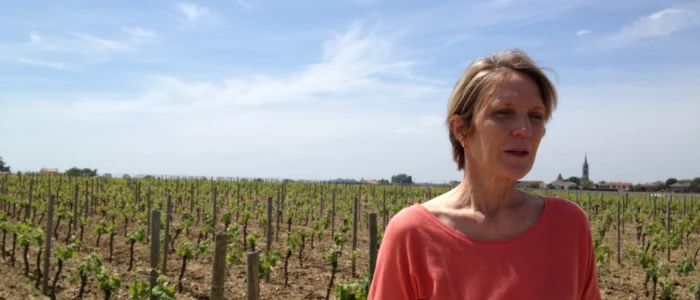
Muita lenda cerca esta propriedade de apenas 11,5 hectares, e um vinho que não ostenta nenhum título. Pétrus não é Grand Cru nem Premier Cru, até porque Pomerol, ao contrário do Médoc, de Graves e de Saint-Émilion, nunca teve uma classificação oficial. E Pétrus não é sequer um château. “O nome é apenas Pétrus”, esclarece Elisabeth JAUBERT, do alto de suas quarenta safras na propriedade. “Não há um château. Existe o chais, mas não um château. Então, como não há château e ninguém mora aqui, o nome é simplesmente Pétrus.”
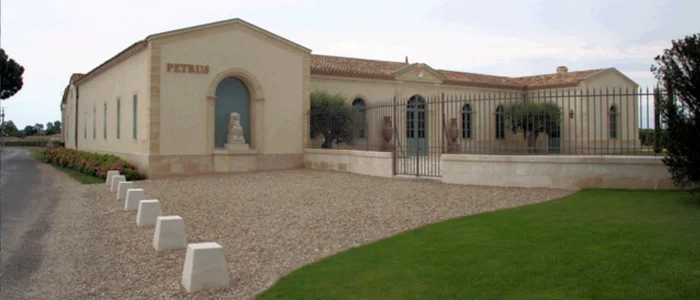
“Pétrus é o nome da propriedade, mas antes disso é o nome desta pequena colina. Ela não é muito elevada, mas ainda assim é o ponto mais alto de Pomerol, com 40 metros de altitude. A colina se chama Pétrus desde que os romanos chegaram aqui. Pétrus, em latim, quer dizer ‘pedra’, e nós estamos sobre uma colina que é um fenômeno geológico único no mundo.”
Nota da redação (2026) O modelo de relevo do IGN situa o ponto mais alto de Pomerol, 40,1 m, dentro das vinhas de Pétrus. Quanto ao nome, Petrus é também Pedro em latim (do grego pétros, pedra); é São Pedro, com as chaves do céu, que aparece no rótulo.
Pétrus em números
a propriedade inteira; 10,5 estavam plantados em 2012
de altitude, o ponto mais alto de Pomerol
uma das duas propriedades só de Merlot, com Le Pin
Madame Loubat e Jean-Pierre Moueix levam o vinho aos Estados Unidos
“Foram os bebedores de vinho”
Também há muitas lendas sobre como Pétrus ficou famoso. “A verdadeira história é que, a partir de 1945 (nos anos 40, na verdade, eu falo de 45 porque foi o fim da guerra), Pétrus passou a pertencer a Madame LOUBAT. Ela estava convencida de que seu vinho era muito bom, tão bom ou melhor do que os do Médoc, que naquela época valiam muito mais. Ao se tornar proprietária, confiou a distribuição a Jean-Pierre MOUEIX, um autodidata que já tinha fundado sua empresa e construído uma excelente reputação para os vinhos da rive droite. Depois da guerra, ele teve a visão de que o grande mercado do vinho seriam os Estados Unidos e partiu para lá com suas amostras de Pétrus. Chegando a Nova York, não foi procurar um jornalista, e sim um dono de restaurante, um francês que tinha dirigido o restaurante do pavilhão francês na Exposição Universal de Nova York, pouco antes da guerra. Ele acabou ficando na cidade durante o conflito e depois abriu seu próprio restaurante, Le Pavillon, por onde passavam todos os americanos riquíssimos. Henri SOULÉ conheceu Pétrus graças a Jean-Pierre MOUEIX, achou o vinho MUITO bom e o apresentou a toda essa clientela, notadamente a Jacqueline e John KENNEDY. Não havia uma recepção na Casa Branca em que Pétrus não fosse servido.”
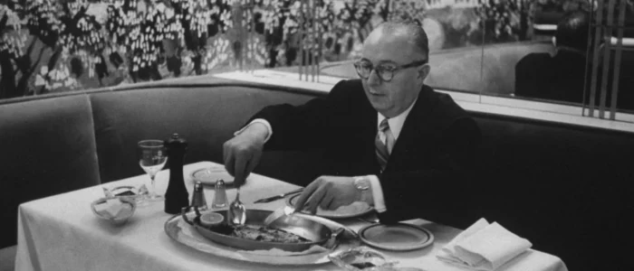
“Então foi assim que Pétrus ficou conhecido. E foi mesmo o boca a boca que foi fazendo a sua reputação depois disso, e não os jornalistas. Foram os ‘bebedores’ de vinho que espalharam Pétrus.”
“Sempre ouvimos muitas versões da história de Pétrus, mas a verdade é simples: as pessoas foram descobrindo este vinho pouco a pouco, foram recomendando, e no fim houve um efeito bola de neve.”
Lendas à parte, o que é, afinal, Pétrus? “É uma questão complexa!”, responde Olivier BERROUET. “Antes de tudo, é um lugar. Um sítio vitícola único no mundo, e por isso temos um vinho que, por sua composição e por sua natureza, também é único. De um lado, ele preenche todos os critérios dos grandes ‘perfis de beleza’ de um grande Bordeaux: é estruturado, longo, tem uma charpente, uma espinha dorsal. Mas, além disso, estas argilas lhe dão uma dimensão única, trazendo algo sedoso, um corpo, uma complexidade que não existem em nenhum outro lugar. Há um grande classicismo na estrutura de Pétrus e, ao mesmo tempo, uma grande originalidade nos aromas e no corpo. É o encontro dos dois que faz deste um vinho mágico.”
A argila é azul como o céu!
Elisabeth JAUBERT
Uma colina de argila
E essa magia começa pelo solo. A pequena colina é feita de uma argila inacreditavelmente azul! “Esta colina é de argila”, explica Elisabeth. “Argilas formadas há 40 milhões de anos, quando toda a bacia da Aquitânia era fundo de oceano. É um tipo de argila que só se encontra em grandes profundidades, e não sabemos por que ela aparece aqui, na superfície desta pequena colina. A argila é azul como o céu!”
“O que vocês veem aqui no chão é uma camada superficial pouco espessa, de apenas 60 a 80 centímetros. Ela é o resultado de milhares de anos de erosão da argila azul, misturada a matéria orgânica e a um pouco de graves, o cascalho. Logo abaixo vem uma camada de 4 a 8 metros de argila azul, e isso é único. Ou seja, nossas raízes estão diretamente sobre a argila, o que faz com que se desenvolvam muito pouco. Isso porque, quando tocam a argila, que está muito perto da superfície, elas já não conseguem penetrá-la. Ela é muito compacta e obriga as raízes a formar ‘cotovelos’ e a crescer na horizontal. Então, ao contrário da maioria das propriedades, que estão sobre outros tipos de terroir, aqui temos um sistema radicular muito menos desenvolvido.”
Infográfico
A argila azul como o céu
Pétrus está sobre uma boutonnière, o nome que os geólogos dão a uma janela de erosão: uma camada antiga, que em volta fica em profundidade, aparece na superfície. Em Pomerol, a boutonnière ocupa cerca de 20 hectares; a argila chega à própria superfície em 3 a 4 deles, sob as vinhas de Pétrus.
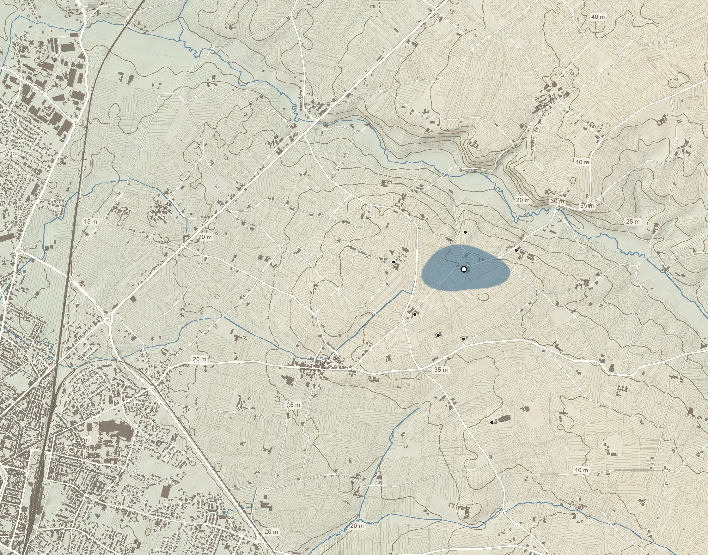
LafleurGazinL’ÉvangileLa ConseillanteVieux Château CertanCheval BlancIgreja de PomerolPétrus40,1 m, o ponto mais alto de Pomerol (IGN)sobre a boutonnière de argila azulVale da BarbanneLIBOURNESAINT-ÉMILION0 · 500 m · 1 kmN ↑curvas de nível a cada 1 m, mestras a cada 5 mparcelas de vinha, na direção das fileirasboutonnière de argila azul, ~20 ha (contorno aproximado)
2Por que é azul
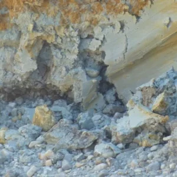
Com oxigênio, o ferro se oxida e tinge o solo de ocre e ferrugem.
Sem oxigênio, numa argila compacta e úmida, o ferro fica reduzido: cinza-azulado.
A esmectita incha quando absorve água e racha quando seca: guarda água para todo o ciclo da vinha, mesmo nos anos quentes, e é tão compacta que as raízes não a atravessam.
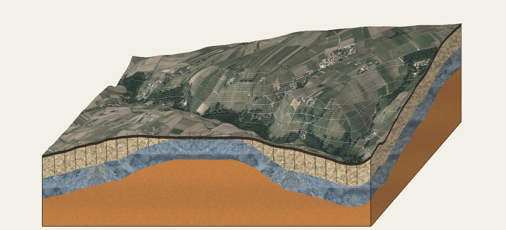
Argila azul (esmectita)4 a 8 m · c. 40 milhões de anosRaízes no cascalhodescem de 5 a 8 mAreia rica em ferroa crasse de ferRaízes em Pétrusparam na argila e correm na horizontalCascalho (graves)cobre a argila no resto do planaltoPétrusa colina, onde a argila chega à superfícieLafleurGazinVale do BarbanneA foto aérea do IGN sobre o relevo real, exagerado 14 vezes, do paralelo de Pétrus até o vale da Barbanne. No corte, as camadas têm escala própria e a geometria do subsolo é esquemática; a textura da argila é a da foto da argila de Pétrus.
5Outras argilas azuis no mundo
Onde uma argila azul comparável aflora sob as vinhas. Nenhum lugar documentado repete Pétrus por inteiro; o selo diz o quanto a comparação se sustenta.
Bem documentados
L’Église-Clinet e Trotanoy · França
Pomerol, o segundo bolsão
A mesma argila azul de esmectita, num segundo bolsão de cerca de 20 ha, mas sem a areia ferruginosa embaixo; há parcelas direto sobre a argila.
forteDecanter ↗
Vieux Château Certan, L’Évangile, La Conseillante, Gazin · França
Os vizinhos de Pétrus
Têm parte das vinhas sobre a mesma boutonnière; só Pétrus está inteiro sobre ela.
forteWine With Seth ↗
Danbury Ridge e vizinhos · Inglaterra
Crouch Valley, Essex
London Clay: também do Eoceno (~50 milhões de anos), marinha e rica em esmectita; fica azul quando se cava. Vinhas plantadas sobre ela.
Comparação parcial
Avignonesi, Poggetto di Sopra · Itália
Montepulciano
Argilas azuis marinhas do Plioceno (Argille Azzurre, 3 a 5 milhões de anos); as raízes entram quando a argila seca e racha.
médiaDecanter ↗
Sul e Torrenieri · Itália
Montalcino
Argilas marinhas do Plioceno, com fósseis de baleia; a mineralogia publicada é ilita, não esmectita.
fracaChâteau Monty ↗
Ródano Sul · França
Cairanne e Vacqueyras
Margas azuis do Plioceno sob coluviões; as raízes param nelas a cerca de 1,6 m. Margas calcárias, que não incham.
fracaInter-Rhône ↗
Só pela cor
Brunate, Cerequio · Itália
Barolo, La Morra
Margas de Sant’Agata (8 a 10 milhões de anos), azul-acinzentadas quando frescas; margas calcárias, não esmectita.
fracaVietti ↗
Borgonha · França
Chablis
Margas do Kimeridgiano (~155 milhões de anos), cinza-azuladas, entre bancos de calcário com ostras fósseis.
fracaBRGM ↗
Fontes: relevo IGN RGE ALTI 1 m (Géoplateforme) e ortofoto IGN; parcelas de vinha © colaboradores do OpenStreetMap. Espessuras do solo e da argila segundo Elisabeth JAUBERT nesta entrevista; idade da argila (cerca de 40 milhões de anos) e áreas segundo a imprensa especializada (Decanter, Wine Folly). A cor pelo ferro reduzido é a explicação geral da ciência do solo.
02O vinhedo de Pomerol
Pétrus é uma pequena propriedade de 11,5 hectares, dos quais apenas 10,5 estavam plantados em 2012, por causa da grande obra de ampliação do chais. “Estamos cercados por outros ícones, como Vieux Château Certan, La Conseillante, L’Évangile e Gazin. Esses quatro vizinhos têm pequenas parcelas sobre a colina de Pétrus, mas a maior parte de seus vinhedos está sobre os graves, e por isso eles precisam fazer assemblagens, misturando vinhos de solos diferentes.”
O cadastro
Quem é dono de cada parcela
Os limites exatos de Pétrus e dos vizinhos, parcela por parcela, segundo os dados oficiais e georreferenciados do fisco francês e do cadastro. Pétrus é um bloco compacto de 15 parcelas no meio da boutonnière; a soma, 11,96 ha, bate com os 11,5 ha de vinhas de que fala Elisabeth.
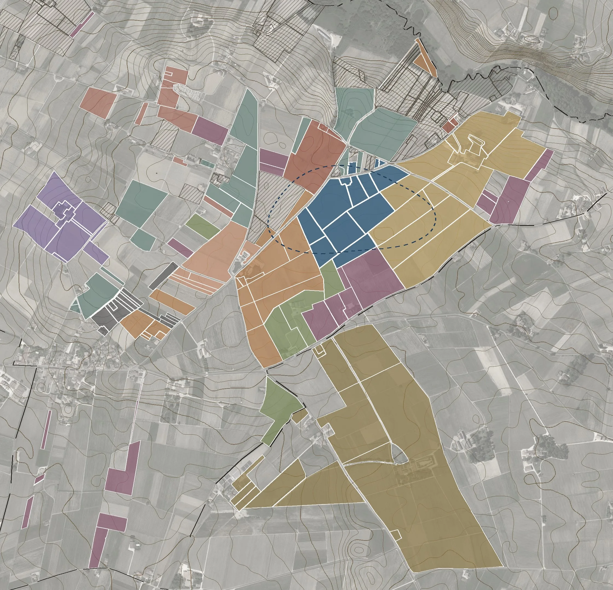
Pétrus11,96 haGazin26,28 haLafleur5,13 haLa Fleur-Pétrus19,27 haVieux Château Certan15,51 haL’Évangile18,16 haLa Conseillante8,68 haCertan de May5,45 haTrotanoy7,94 haL’Église-Clinet5,77 haLe Pin3,09 haCheval Blanc47,41 haBoutonnière de argila azul~20 ha, contorno aproximadoPOMEROL ↑SAINT-ÉMILION ↓0 · 250 · 500 mN ↑
- PétrusPETRUS (429143050)11,96 ha15 parcelas
- Vieux Château CertanSOC CIVILE AGRICOLE VIEUX CHATEAU CERTAN (781966940)15,51 ha21 parcelas
- L’ÉvangileCHATEAU L'EVANGILE (781966957); SC CHAT L EVANGILE18,16 ha29 parcelas
- La ConseillanteHERITIERS NICOLAS VITICULTURE (781967195)8,68 ha5 parcelas
- GazinGFA CHATEAU GAZIN (314391657)26,28 ha15 parcelas
- LafleurDOMAINE DE LAFLEUR (488594151); DOMAINE DE LAFLEUR-POMEROL (443057831); SOCIETE CIVILE DU CHATEAU LAFLEUR (453261208)5,13 ha7 parcelas
- La Fleur-PétrusS C DU CHATEAU LA FLEUR PETRUS (389608670)19,27 ha20 parcelas
- TrotanoyCHATEAU TROTANOY (390865855)7,94 ha11 parcelas
- L’Église-ClinetSCEA CHATEAU L'EGLISE CLINET (398897546)5,77 ha13 parcelas
- Le PinSCA DU CHATEAU DU PIN (315668665)3,09 ha15 parcelas
- Certan de MayCHATEAU CERTAN DE MAY (412270142)5,45 ha6 parcelas
- Cheval BlancCHATEAU CHEVAL BLANC (781985759)47,41 ha14 parcelas
- Outras terras MoueixÉtablissements Jean-Pierre Moueix: parcelas que o cadastro não atribui a um château38,15 ha87 parcelas
O mapa mostra quem é dono, não quem cultiva: parcelas de pessoas físicas não são públicas e terras arrendadas não aparecem, por isso L’Évangile (~22 ha cultivados) e La Conseillante (~12 ha) surgem menores. Fontes: DGFiP, arquivo das parcelas de pessoas jurídicas (situação de 1º de janeiro de 2025); cadastro Etalab; ortofoto e relevo IGN; divisa das comunas © colaboradores do OpenStreetMap.
Elisabeth explica, com paixão, por que Pétrus é único: “Só Pétrus está 100% sobre a colina. Apenas uma vez em nossa história tivemos a oportunidade de crescer um pouco. Em 1970, compramos os 5 hectares do alto da colina que pertenciam ao Château Gazin, que naquela época precisava de dinheiro para pagar impostos de sucessão.”
Nota da redação (2026) As fontes registram a compra das terras de Gazin em 1969. Com ela, o vinhedo passou de cerca de 7 para 11,5 hectares.
“Percebemos que Pétrus é único porque há uma combinação de fatores, não só no solo, mas também no relevo. Se tivéssemos um terreno completamente plano ou, pior ainda, uma depressão, não teríamos a qualidade de vinho que temos. A leve inclinação da colina deixa a água escoar pela gravidade, enquanto nossas argilas retêm as moléculas de água necessárias para todo o ciclo vegetativo da vinha. Mesmo nos anos muito quentes, nunca tivemos o ciclo interrompido pelo calor. Aqui em Pétrus é diferente, completamente diferente!”
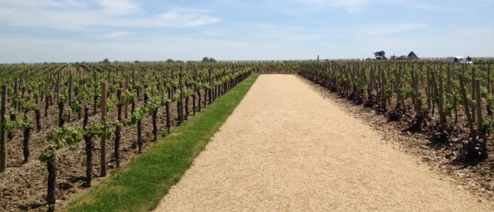
“Não se deve tocar na vinha”
Nesse momento, um turista que passava pela estrada encosta o carro junto à propriedade, desce e se agacha ao pé de uma vinha, ao que parece para tirar uma foto. Visivelmente aborrecida, Madame JAUBERT interrompe a conversa e não tira os olhos dele até que se afaste.
“Não se deve tocar na vinha. A vinha é muito frágil, não se pode tocar!”, diz Elisabeth. E se explica: “Nunca conseguimos colher as uvas daquela parcelinha!” Ela aponta para a faixa que margeia a estrada. “Na época da vindima, os visitantes comem as uvas antes que tenhamos a chance de colhê-las. Eles passam pela nossa vigilância e pegam a fruta como um troféu, só para dizer: voilà, consegui!”
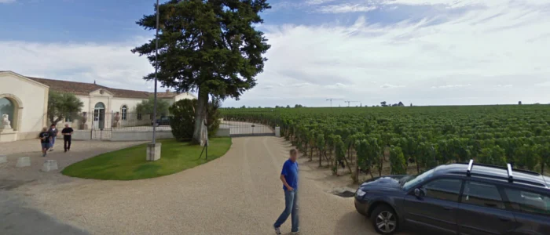
Feito 100% de Merlot, Pétrus tem também uma condução da vinha muito particular, e Elisabeth conhece este vinhedo como conhece o seu jardim: “Como nosso sistema radicular é pouco desenvolvido e as raízes crescem na horizontal, as vinhas não podem ficar muito próximas umas das outras. Por isso temos menos pés por hectare do que no Médoc. No Médoc há, em média, 10.000 por hectare, e aqui nós temos 6.500. Aqui mantemos 1,25 m entre as fileiras e 1 m entre os pés.”
Olivier completa: “Em Pétrus, as raízes se espalham em torno do pé, e não em profundidade, como num solo de graves. No cascalho há muito pouco para ‘comer e beber’, como dizemos em francês, e a vinha é obrigada a descer muito fundo, chegando a 5, 6 ou 8 metros. Por isso seria uma aberração plantar mais de 6.000 ou 7.000 pés por hectare na rive droite. Teríamos vinhas que se tocam, e que não aguentariam tanto tempo.”
Como as raízes não descem fundo, seria possível imaginar que a idade das vinhas pouco importa. Elisabeth é enfática: “A idade da vinha influencia, claro que sim. A nossa média é de 40 anos.” E a embaixadora sabe cada detalhe: “Hoje, nossas vinhas mais antigas são de 1952 e as mais jovens, de 2005. Para construir o novo chais, tivemos de arrancar 1 hectare, meio de Cabernet Franc e meio de Merlot. Por enquanto, o terreno está em repouso. Plantamos gramíneas para enriquecer o solo antes de replantar, e eu ainda não sei se a parcela será replantada em 2013 ou em 2014.”
Nota da redação (2026) Aquele meio hectare era o último Cabernet Franc de Pétrus. Desde a safra de 2010, o vinho é feito só de Merlot.
“O ciclo vegetativo está mais adiantado do que vocês viram no Médoc, porque o Merlot é mais precoce que o Cabernet. Mas tivemos um período frio que fez a vinha sofrer terrivelmente: vejam, aqui dois botões não brotaram.”
“Agora estamos retirando os gourmands, os brotos que nascem no tronco e roubam a seiva. Ao mesmo tempo, observamos se os botões vão se recuperar ou se estão comprometidos e devem ser descartados. Em outras palavras, estamos vendo se a natureza vai nos deixar recuperar o atraso causado pelo frio.”
Uma garrafa por pé
A poda, a desfolha, a vendange verte… tudo é conduzido com cuidado, e Elisabeth fala como quem mostra o próprio roseiral: “Este pé representa o ideal. O que buscamos é um tronco bem reto, com o braço do ano passado e o deste ano voltados para lados opostos e, a partir deles, sarmentos bem perpendiculares, para favorecer a circulação da seiva. Vamos deixar brotar 4 ou 5 sarmentos no braço deste ano; cada um vai dar 2 cachos e, ao todo, isso nos permitirá fazer uma garrafa de vinho.”
“O próximo momento é a floração. Se o tempo continuar assim, vamos vê-la provavelmente no início de junho; no ano passado foi muito precoce, em maio. Tradicionalmente, a floração acontece por volta de 15 de junho, e é por isso que nesse dia se celebra a Festa da Flor. É o tempo que fizer durante a fecundação que dirá se as uvas vão vingar ou cair, e é nesse momento que podemos estimar se teremos uma bela colheita. Só então fazemos os ajustes necessários.”
No vinhedo
- 1Parcela de Pétrus: 1,25 m de distância entre cada fileira
- 2Retirada dos gourmands
- 3O sucesso da floração é um conjunto de fatores
“As primeiras vendanges vertes de Bordeaux foram feitas aqui em Pétrus, nos anos 70. Mas percebemos que, quando a fazíamos em julho, a vinha tendia a compensar: se você tirava metade dos cachos em julho, não acabava com meia colheita, porque as uvas que restavam ficavam maiores, ou seja, menos concentradas. Então passamos a controlar a quantidade de uvas antes, com antecedência.”
“Nós educamos a vinha. Trabalhamos com ela, não contra ela, justamente para que ela mesma consiga se concentrar ao máximo nas uvas que deve produzir.”
Tesourinhas de criança
“Em Pétrus, fazemos alta-costura! No ano passado, por exemplo, tudo foi muito mais precoce. Em junho tivemos alguns dias extremamente quentes, e o sol do fim de tarde, vindo do oeste, refletia nos graves, e toda a primeira fileira, na beira do caminho, foi queimada pelo sol. Alguns pés mais atrás também. Fizemos uma passagem para eliminar os cachos queimados. Depois, com tesourinhas de criança, voltamos aos cachos que tinham só algumas uvas queimadas e cortamos uma a uma.”
Em Pétrus, fazemos alta-costura!
Elisabeth JAUBERT
03Da colheita à adega
Decidir a data da colheita é um momento crítico em Pétrus. Olivier conta: “Todo ano aparece uma novidade: usar pinça de depilar no processo, tocar música durante a vinificação, coisas assim. Yves GLORIES, que infelizmente já faleceu, era o decano da Faculdade de Enologia de Bordeaux. Quando lhe perguntaram o que fazer naquele ano para obter um grande vinho, ele respondeu: ‘Há duas questões cruciais: a data da colheita e o controle das extrações!’”
“Se conseguirmos controlar perfeitamente esses dois parâmetros (claro que exagero um pouco), o resto é quase acessório.”
“Definir a maturidade e o potencial de extração da uva são duas decisões complicadas, porque não têm volta. Uma vez tomada a decisão, somos obrigados a seguir a partir dali.”
Decisão tomada, entram em cena os colhedores, e Elisabeth explica o papel deles: “A única triagem que cabe aos colhedores é eliminar o Botrytis, a podridão cinzenta. É o único critério de descarte que é deles. Todas as outras decisões de descarte são nossas, da equipe técnica.”
A triagem óptica
“Pétrus tem fama de não ser technology friendly. Gostamos de fazer as coisas da maneira mais clássica possível. Desde 2009, porém, abrimos uma exceção para a triagem óptica das uvas. Em 2011 ela foi extremamente útil por causa do millerandage, ou seja, tínhamos bagos perfeitamente maduros ao lado de outros que não estavam bons, ainda rosados. Como a triagem óptica permite controlar até o nível de cor, tudo o que não tinha exatamente a cor certa pôde ser eliminado.”
“Nos anos anteriores, a triagem óptica descartava cerca de 1%. Em 2011 foi um pouco mais, mas o que importa é o efeito que essas uvas indesejadas teriam no gosto do vinho. Vamos continuar nesse caminho, não só pela qualidade da triagem, mas também pela velocidade. Antes, a triagem era feita à mão, por mulheres, porque é preciso ter dedos pequenos e ágeis. Cada hora de colheita exigia duas ou três horas de triagem, e elas ficavam na mesa até a meia-noite, às vezes até uma da manhã. No dia seguinte, tudo recomeçava. Com a nova máquina, a triagem acompanha o ritmo da colheita, e as uvas chegam mais depressa às cubas, o que reduz o risco de oxidação. É, sem dúvida, uma ferramenta muito útil.”
Da triagem às cubas
- 1Uvas na mesa de triagem ópticaElisabeth JAUBERT
- 2As cubas de concreto armado são de extrema simplicidade, quase espartanas
- 3As cubas em inox de Pétrus servem unicamente de suporte à assemblagem
Colhidas e triadas, as uvas entram no chais de Pétrus. Elisabeth e Olivier nos levam para dentro, onde nos espera uma grande surpresa. Em vez de uma construção imponente, cercada de glamour e tecnologia, as cubas são de uma enorme simplicidade. “No vinhedo, fazemos de tudo para obter a melhor uva possível. Depois, no chais, há muito pouco a fazer. Na maior parte do tempo, quando a natureza é generosa, o trabalho consiste principalmente em… não fazer nada. Quando se tem um cavalo vencedor, e que vence há tanto tempo…”
“Olivier BERROUET foi precedido pelo pai, que sozinho produziu 45 safras de Pétrus”, lembra Elisabeth. “Os dois juntos somam 50 anos. Meio século de conhecimento e experiência. Se Jean-Claude BERROUET não achasse que este era o melhor processo para Pétrus, teria feito outra coisa. Como sempre considerou que isto é o que existe de melhor… nós continuamos.”
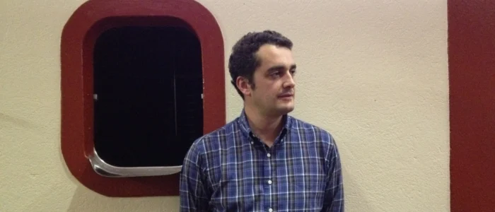
“A ambição do novo chais é dar mais espaço, para trabalharmos melhor e com mais flexibilidade. O antigo foi construído em duas etapas: a primeira parte das cubas em 1945, logo depois da Segunda Guerra, e a outra mais tarde, quando a compra dos 5 hectares de Gazin exigiu mais cubas. Hoje a produção é menor do que naquela época, e ficamos com cubas grandes demais, que não permitem vinificar parcela por parcela. O que não é tão grave, já que temos conseguido fazer um bom vinho.”
“O novo chais será quase igual, mas com mais cubas, menores e de tamanhos variados, para permitir a vinificação parcelar.”
“O inox”, diz ela, referindo-se às duas cubas de aço, “foi uma solução porque precisávamos de mais cubas, e elas servem unicamente para estocar o vinho. Como vocês podem ver, cada uma é formada por duas cubas sobrepostas. Mas atenção: NÃO usamos inox para vinificar o Merlot.”
Concreto, não inox
“Para a vinificação, as cubas são de concreto armado bruto. O concreto não acrescenta nada ao gosto do vinho, até porque preparamos as cubas aplicando sobre ele uma solução de ácido tartárico, porque o concreto é alcalino e o ácido tartárico nos permite criar um ambiente perfeitamente neutro para receber a colheita. Isso não interfere em nada no gosto de Pétrus.”
“Como o concreto tem uma inércia térmica muito maior do que o inox, podemos receber as uvas no período mais fresco. Antigamente colhíamos à tarde, para que as uvas não chegassem molhadas do orvalho da manhã. Hoje, com o aquecimento climático, colhemos de manhã, para que mantenham uma temperatura mais baixa. Isso nos permite esperar cerca de 24 horas depois da colheita. Nesse tempo, as uvas fazem uma suave pré-fermentação, antes que a fermentação de fato comece, de maneira natural.”
É nessas cubas de concreto que a magia acontece e começa a vinificação do mito. Sempre falando muito abertamente, Elisabeth enfrenta a polêmica das leveduras exógenas, compradas e adicionadas ao mosto: “Normalmente não adicionamos nenhuma levedura, salvo nos anos em que fica claro que será absolutamente necessário para iniciar a fermentação.”
“A fermentação e toda a vinificação, em Pétrus, mais uma vez, são diferentes. É a única propriedade onde o Merlot é tratado de uma maneira completamente particular. A maioria das propriedades tem Cabernet Sauvignon, Cabernet Franc e Merlot, e existem apenas duas que são 100% Merlot: Le Pin e Pétrus. Na maior parte dos casos, é uma assemblagem de Cabernet Franc e Merlot. Em La Fleur-Pétrus (que, ao contrário do que muita gente pensa, não é o segundo vinho de Pétrus, mas outra propriedade da família MOUEIX), temos Cabernet Sauvignon, Cabernet Franc e Merlot. Nas propriedades que visitei em Bordeaux, e faz quarenta anos que visito propriedades diferentes, trata-se o Cabernet exatamente como o Merlot. Mas o Merlot é uma casta muito diferente e, por isso, precisa ser tratado de maneira bem diferente.”
“Os taninos dos Cabernets são mais duros e, para que evoluam e fiquem um pouco mais macios, é preciso oxigênio. Os taninos do Merlot, ao contrário, são macios desde o início, e por isso não podem ser expostos ao oxigênio, que envelheceria o vinho prematuramente. Podemos muito bem vinificar os Cabernets em cubas de inox, onde o aporte de oxigênio não é um inconveniente. Para os Merlots, porém, é preciso vinificar em concreto, que impede a oxigenação.”
“Quando você compra um bom chá…”
Depois da fermentação vem outro processo crítico: a extração. Olivier explica sua visão: “Durante todo o ciclo, até a colheita, ficamos apreensivos com a matéria-prima. Fazer vinho tinto é decidir o tempo certo de infusão entre um líquido e um sólido. Quando você compra um bom chá, o que está escrito na caixa? Três minutos a 85 °C, ou seis minutos a 90 °C… Para nós é igual: precisamos definir esse tempo e essa temperatura de infusão.”
“E se formos além da capacidade de extração da matéria-prima, o que acontece? Exatamente o mesmo que com o chá quando você esquece o saquinho na xícara: escurece, amarga, fica seco, agressivo, e dá vontade de não beber. E com o vinho é exatamente a mesma coisa. Se passamos do potencial de extração da uva, desequilibramos rapidamente o produto final e teremos um vinho sem harmonia e sem equilíbrio. E isso não se corrige depois.”
“Dependendo da safra, a extração total dura de 12 a 18 dias, e a decisão precisa ser tomada com menos de 24 horas de margem em relação ao ponto ideal. A incerteza não pode durar mais de um dia.”
Da vinha à garrafa
descartadas pela triagem óptica num ano normal
de extração, conforme a safra
lavadas a vapor e com água antes do uso
de élevage
“Mas atenção: não é porque um vinho passa apenas 12 dias na cuba de extração que será pior. Uma coisa não tem relação com a outra. Só nos interessa o resultado final, não os processos aplicados.”
04O equilíbrio do vinho
“Quando você vai ao cinema, por exemplo, não importa quem escreveu o roteiro, quem estava atrás da câmera, quem desenhou o figurino ou qual era a marca da película. Só importa se você sentiu emoção ao ver o filme e, sobretudo, se ficou uma boa lembrança quando saiu da sala. Porque há filmes que dão vontade de esquecer que vimos, de tão ruins!” [risos]
“Com o vinho é a mesma coisa. Toda a parte técnica não interessa a quem bebe; a única coisa que importa é se sentiu prazer ao degustar aquele vinho. E é assim que fazemos vinho, a começar por nós mesmos, porque aqui a gente gosta bastante de beber, e nos perguntamos o tempo todo se teremos prazer em beber este vinho daqui a alguns anos.”
Só 50% de barricas novas
O uso racional de barricas de carvalho novo também diz muito sobre Pétrus. Olivier é contra o uso intensivo de madeira nova: “Aqui somos muito atentos à madeira, principalmente porque, com os anos, percebemos que o vinho é muito sensível a ela. Usamos apenas 50% de barricas novas e, quando as recebemos, passamos vapor sob pressão por 5 ou 6 minutos e depois as enchemos de água por 15 dias, para extrair o primeiro gosto, ou seja, os taninos mais fortes da madeira.”
“Também reduzimos o tempo de élevage, o amadurecimento em barrica, que agora fica entre 14 e 18 meses, conforme a safra. Somos MUITO atentos à madeira porque não queremos que ela domine o vinho. Quando a madeira participa demais, mesmo num vinho jovem, traz taninos muito estáveis e aromas padronizados (carvalho é carvalho, esteja você em Saint-Émilion, em Pomerol ou no Médoc). Com o tempo, os taninos da madeira dão uma sensação de secura na boca, de dureza… Para nós, o excesso de madeira limita o prazer.”
Aos 33 anos, em sua quinta safra em Pétrus, Olivier BERROUET não carrega sozinho toda a responsabilidade, e divide as decisões mais críticas com quem veio antes dele. “Meu pai era o responsável pela enologia, e Christian MOUEIX cuidava da viticultura de Pétrus. Os dois continuam como consultores, ou seja, seguem ao meu lado nas decisões importantes.”
“Tudo o que diz respeito ao tratamento do solo, à vendange verte, à desfolha, à éclaircissage (o desbaste), à nutrição da vinha, à data da colheita… tudo isso representa uma quantidade enorme de pequenos ajustes, aos quais precisamos estar atentos o verão inteiro, nos adaptando sempre. Não existe receita, o que existe é uma adaptação constante.”
“Trago experiência, mas dificilmente se podem reproduzir técnicas de outros sítios vitícolas quando eles são tão específicos quanto Romanée-Conti, Haut-Brion ou Margaux: há a história, as castas, o tipo de vinho… O que podemos trazer é a reflexão que existe por trás de cada gesto.”
“Infelizmente, não tenho nenhuma receita para dar. Aqui estamos em adaptação constante. Acredito que, quando se tenta aplicar uma receita ou impor ao vinho uma sedução imediata, ele perde toda a personalidade. É claro que esses vinhos podem seduzir depressa, mas, a longo prazo, acho que é uma estratégia perdedora. Para mim, a viticultura é adaptar os gestos para produzir as melhores uvas possíveis em função do tipo de vinho que queremos fazer. Toda a tecnologia e toda a técnica devem estar a serviço do resultado. Devo fazer o vinho para mim, Olivier BERROUET? Para melhorar minha imagem na mídia? Para seduzir duas ou três pessoas-chave? Unicamente para o proprietário? Ou, o que tentamos fazer, um vinho que conte, a cada ano, a história de Pétrus?”
“Nós só fazemos vinho”
Olivier nasceu e cresceu ao lado de Pétrus, e talvez por isso consiga manter a humildade e a serenidade diante do vinho mais observado pela mídia no mundo inteiro: “Tive a sorte de viver perto desta propriedade desde pequeno. Eu acho que consegui dessacralizá-la. Afinal, nós só fazemos vinho! Mesmo que esse vinho seja Pétrus… Como técnico, posso manter uma certa distância para tomar as decisões. Imagine se todo dia eu acordasse pensando: nossa, tenho de ir fazer Pétrus! Para começar, teria um ego desmedido e seria incapaz de tomar boas decisões. É preciso manter uma certa distância de tudo isso, levar as coisas menos a sério e, de vez em quando, dar prova de bom humor, o que é fundamental neste ofício para decidir com frieza. Porque, quando estamos muito excitados ou sob forte estresse, não tomamos boas decisões. E a pressão existe, e é forte.”
Olivier não se deixa levar pelas tendências, e sua visão de um grande vinho é bastante conservadora. Ele discorda da moda segundo a qual um bom vinho deve ser bom em todas as fases da vida: “As pessoas confundem com frequência. Não se pode ter tudo na vida. Um vinho que entrega tudo imediatamente não pode envelhecer tanto quanto um vinho que se guarda, que se reserva. Um vinho que se revela logo, depois de seis meses, um ano ou três anos, terá vida curta. São duas coisas completamente diferentes.”
“Para mim, o equilíbrio está sobretudo na carga tânica do vinho. Diz-se que um Bordeaux envelhece porque tem taninos; então, quanto mais taninos, mais ele envelheceria. É um erro! A questão não é quantitativa, mas qualitativa. Houve na história vinhos de Bordeaux pouco tânicos que envelheceram de forma exuberante. O 1970 não é nenhum monstro de tanicidade, nem o 71, e mesmo assim envelheceram durante décadas.”
“Hoje não existem tantos grandes vinhos capazes de envelhecer 30 ou 40 anos. Acho que devemos ser humildes e aceitar que há sítios vitícolas que, por não serem muito bem localizados, nunca farão grandes vinhos, mesmo com muita tecnologia. Digo isso com toda a humildade, porque meu pai, meu irmão e eu somos viticultores em denominações muito mais modestas, em lugares que não têm a qualidade de Pétrus, e precisamos aceitar isso. Se pudéssemos fazer Pétrus na nossa propriedade familiar, não deixaríamos de fazer. Mas não podemos, porque o solo é o elemento que decide, que faz com que você nunca seja melhor que o seu vizinho. Claro que há trabalhos equivalentes, mas, se dois viticultores se dedicarem da mesma forma, é o solo que vai determinar a qualidade do vinho. E é justamente o solo que determina se podemos fazer vinhos de guarda, não a tecnologia aplicada ao processo.”
“Não é porque você passa 150 horas no vinhedo que sua uva vai ganhar capacidade de envelhecer 10 ou 15 anos a mais. Não é porque você construiu um chais de 10 milhões de euros, ou compra a cada ano 200% de barricas novas, que seu vinho vai envelhecer, ou quem sabe ser melhor. É o solo que vai definir!”
É o solo que vai definir!
Olivier BERROUET
“O trabalho humano acompanha a matéria-prima. Ele deve acompanhar a uva e, depois, o vinho. Mas é só isso!”
“Somos como um médico obstetra”
“Tenho uma visão um pouco brutal: somos como um médico obstetra. Se o bebê é bonito, não é por causa do trabalho do médico no parto; afinal, ele não é nem o pai nem a mãe (salvo em alguns casos, mas aí é mais complicado [risos]). A função do obstetra é acompanhar a gestação e o nascimento, não deixar o bebê cair e, no máximo, acompanhar os primeiros anos de vida. Só isso. É o DNA do pai e da mãe que determina como será o bebê. E o nosso papel é esse, o do obstetra. É fundamental, mas não é ele que determina o nível de qualidade da uva ou do vinho.”
“Estamos em adaptação constante, e o nível de reflexão é o mesmo, seja em Pétrus, seja na nossa pequena propriedade familiar. Acontece que a nossa propriedade nunca terá a potência de Pétrus, e por isso digo que é preciso ser humilde e aceitar. É como tudo na vida: eu adoraria ter 1,95 m para jogar basquete, mas não tenho! É assim mesmo… mas eu compenso!” [risos]
“O que quero dizer é que este é um ofício em que é preciso ser humilde e aceitar que os anos são diferentes e que cada um trabalha num lugar diferente, com potenciais diferentes. No fim, é isso que torna o vinho interessante. Imagine se, graças à tecnologia, todos nós fizéssemos os mesmos vinhos. Que tédio! Seria entediante, você não acha?”
Os críticos e os quatro segundos
Com os críticos de vinho, Olivier procura manter uma relação cordial, mas questiona os métodos: “Quando você degusta 100, 120, 150 vinhos numa manhã, dedica em média apenas 4 ou 5 segundos a cada um, e sabemos que certas sensações, como o amargor, só aparecem depois de 8 a 12 segundos na boca. O amargor, para mim, é o gosto mais revelador de uma sociedade educada, ou seja, só passamos a apreciá-lo quando somos educados o suficiente (uma criança, por exemplo, só gosta do doce). Há diferentes tipos de amargor, os químicos, os medicamentosos. O quinino da água tônica é um amargor químico, e certos vinhos excessivamente extraídos podem apresentar esse gosto de quinino, e um degustador que passa 4 ou 5 segundos num vinho não percebe esse defeito. E, para mim, o final de um vinho é fundamental. Neste vinho, por exemplo”, diz ele sobre o 2011 que estávamos degustando, “há um pouco de amargor, mas um amargor de cacau, longo e agradável, que traz elegância. Se degustamos como uma metralhadora, passamos ao largo de toda a beleza de um vinho, de tudo o que fica depois de bebê-lo, ou mesmo de cuspi-lo.”
“Para degustar um grande vinho, é preciso se dar tempo e estar concentrado; caso contrário, você passa ao largo do grande vinho. A relação com o tempo é fundamental!”
Na sala de degustação
- 1Degustação de Pétrus 2011
- 2Uma das atribuições de Elisabeth JAUBERT é degustar Pétrus todos os dias
- 3Olivier BERROUET mantém a serenidade
E o cara a cara com Robert PARKER?
05Histórias de Pétrus
“Bom, isso já me aconteceu várias vezes, mas Monsieur Parker é sempre muito gentil!”
Claro, porque ele ADORA Pétrus.
“Pode ser, mas não este ano…”, sorri Olivier, lembrando o último encontro.
Madame JAUBERT continua otimista: “Por enquanto, por enquanto… Ele ainda vai ter a oportunidade de rever a crítica!” [risos]
Parker deu ao Pétrus 2011 magros 90-93 pontos, algo raro na relação da Wine Advocate com este vinho. Mas isso não perturba Olivier: “Bom… A vantagem é que temos proprietários muito envolvidos na produção de Pétrus, que acompanham todas as etapas e decisões. Para eles, a qualidade do vinho não se julga pela nota de uma só pessoa. A força de Pétrus é tão grande que podemos nos desligar, ao menos um pouco, do julgamento da maior parte dos jornalistas. E, talvez eu me repita, não fazemos vinho para que Monsieur Parker, que é um excelente degustador, nos dê uma nota melhor ou pior. Fazemos vinho para Pétrus.”
Nota da redação (2026) Madame Jaubert tinha razão. Em 2014, com o vinho já em garrafa, Parker reavaliou o Pétrus 2011 e lhe deu 95 pontos.
Fazemos vinho para Pétrus.
Olivier BERROUET
1991, a safra que não existe
Outra lenda que cerca Pétrus é a da safra de 1991, que não existe. Circulam várias versões, mas Olivier conta a verdadeira: “O que aconteceu? O que aconteceu em 21 de abril de 1991? Mais precisamente, na noite de sábado para domingo? Uma grande geada. Tudo congelou, e perdemos de 90% a 95% da colheita.”
A safra que não existe
na noite de sábado para domingo, tudo congelou
perdidos
seria tudo; o vinho foi vendido como Pomerol genérico
“Não era uma safra de qualidade. Até porque, quando a vinha sofre demais, ela não produz bem (é como as mulheres: quando sofrem de verdade, não conseguem ser verdadeiramente belas…)” [risos]
“Nem gentis!!!”, completa Madame JAUBERT. [risos]
Olivier tenta retomar o raciocínio: “Esse era o primeiro ponto, o segundo… não me lembro qual era… Ah, sim! Começávamos a sentir uma grande especulação em torno de Pétrus, e pensamos que lançar uma safra de apenas 3.000 garrafas seria uma loucura. Preferimos vender o vinho ao négoce, como um Pomerol AOC genérico.”
Portanto, atenção: se você tem uma garrafa de Pomerol 1991 genérico, comercializado pelos Établissements Jean-Pierre MOUEIX, há grandes chances de você ter um Pétrus sem saber!
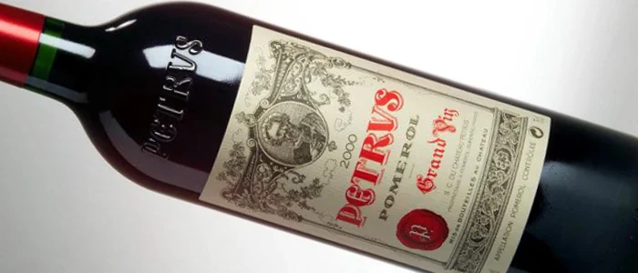
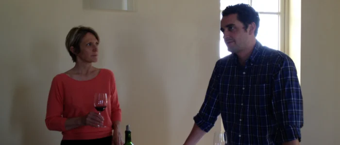
Glossário
Para entender
- Pomerol sem classificação
- Ao contrário do Médoc (1855), de Graves (1959) e de Saint-Émilion (1955), Pomerol nunca teve uma classificação oficial. Pétrus não precisa de título.
- Chais
- A adega onde o vinho é feito e amadurece. Em Pétrus, não existe château: existe o chais.
- Rive droite
- A margem direita da Dordonha, onde ficam Pomerol e Saint-Émilion, terra do Merlot. A rive gauche, do Médoc e de Graves, é a do Cabernet Sauvignon.
- Graves
- O cascalho de seixos rolados trazido pelos rios, típico de Bordeaux; dá nome também a uma região.
- Boutonnière
- Janela de erosão: o lugar onde uma camada antiga, que em volta fica enterrada, aparece na superfície. A de Pétrus tem cerca de 20 ha, e a argila aflora em 3 a 4.
- Vendange verte
- A colheita em verde: cortar cachos ainda verdes para concentrar a vinha nos que ficam.
- Gourmands
- Brotos que nascem no tronco e consomem a seiva sem dar fruto; são retirados na primavera.
- Fête de la Fleur
- A festa da floração, celebrada em junho pela confraria bordalesa Commanderie du Bontemps.
- Millerandage
- Desavinho: bagos de tamanhos e maturação desiguais no mesmo cacho, quando a floração vai mal.
- Leveduras exógenas
- Leveduras selecionadas, compradas e adicionadas ao mosto, em vez das que vêm naturalmente com a uva.
- Extração
- O tempo e a temperatura em que o vinho fica em contato com cascas e sementes, de onde tira cor e taninos.
- Élevage
- O amadurecimento do vinho em barrica antes do engarrafamento: em Pétrus, de 14 a 18 meses.
- Éclaircissage
- O desbaste: retirar cachos ou folhas para equilibrar a carga da vinha.
- 200% de madeira nova
- A prática de passar o vinho por duas barricas novas seguidas; Olivier a usa como exemplo do excesso.
- Négoce
- Os comerciantes de Bordeaux que compram vinhos dos châteaux e os vendem, às vezes com a própria marca.